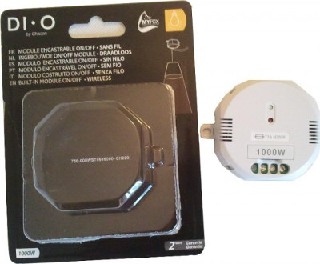
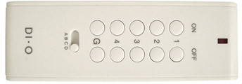
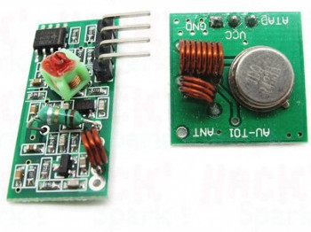
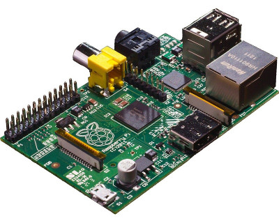
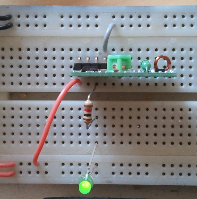
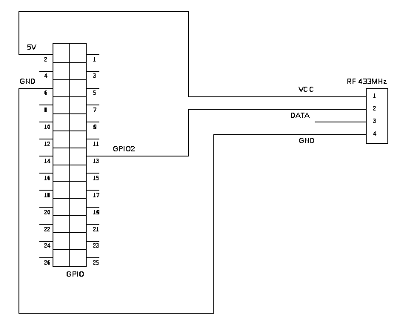
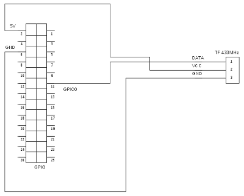

Dans ce tutoriel, nous allons voir comment faire de la domotique avec le fameux Raspberry Pi. En gros, comment piloter ses volets roulants, lumières, …
C’est parce que les infos que j’ai trouvées sur le net étaient incomplètes que j’ai décidé d’écrire ce tutoriel. Vous trouverez sûrement des choses sur le sujet, mais avec de l’équipement pas commun. Je vous détaillerai la manière avec laquelle, j’ai mis en place mon système.
Je vous propose d’aller faire un tours sur cet article : http://hackspark.fr/fr/blog/2012/12/connecter-des-dispositifs-sans-fil-a-votre-arduino-ou-raspberry-pi-partie-1-reception-en-433mhz/
Note: sur un autre article, je propose cette implémentation sur arduino: Le protocole HomeEasy sur Arduino (http://www.noopy.fr/arduino/le-protocole-homeeasy/)
Le matériel
Pour ce qui est du matériel, il vous faut d’abord vous équiper d’interrupteurs commandés à distance. J’avais le choix entre la solution Casto et la solution LeroyM. Casto propose la marque Blyss. Ce qu’il faut savoir, c’est que Blyss est la marque Casto. C’est un produit développé par le magasin. Par principe, j’ai écarté cette solution, car il y a un risque qu’aucune norme ne soit respectée. Il me restait donc la solution LeroyM. C’est la marque Chacon (http://www.chacon.be/). N’oubliez pas d’acheter la télécommande qui va avec !


Vous aurez ensuite besoin d’un Raspberry Pi ansi que d’un ensemble émetteur/récepteur 433MHz. Vous pouvez trouver le tout sur http://hackspark.fr/ :
- Le Raspberry Pi
- Le kit 433MHz


Les entrées-sorties du RPI
Afin de pouvoir utiliser les entrées et sorties du Raspberry Pi (connecteur à 26 broches) encore appelé GPIO, nous devons installer WiringPi. Vous trouverez les instructions ici : https://projects.drogon.net/raspberry-pi/wiringpi/download-and-install/
sudo apt-get install git-core
mkdir ~/src
cd ~/src
git clone git://git.drogon.net/wiringPi
cd wiringPi
sudo ./build
Première étape décodage du signal
Test préliminaire
Dans un premier temps, il va falloir comprendre comment fonctionnent les modules Chacon. Et encore avant, comment fonctionne ce petit récepteur 433MHz qui coûte moins de 5€.
Commencez par câbler le module de réception en plaçant à la sortie une led en série avec une résistance 1K. Vous mettrez
- au 5V la broche VCC
- au 0V la broche GND
- une des deux sortie DATA vers la led

Vous constatez que la led s’allume et vacille. En gros, c’est le bordel sur les ondes ! Par contre, si vous actionnez votre télécommande, la led se synchronise sue le clignotement du voyant de celle-ci. Cool ! le récepteur fonctionne. Par contre, il va falloir faire le tri des patates entre le bruit ambiant et le signal reçu de la télécommande.
Câblage avec le Raspberry
Utilisez le 5V et le GND du Raspberry pour alimenter le module, et reliez la data sur le GPIO2 (broche 13). Pour la librairie WiringPi, c’est l’entrée 0 (voir la correspondance ici)

Programme de décodage
Commencez par récupérer les sources:
cd ~/src
git clone https://github.com/landru29/chacon-rpi.git
Et on compile
cd ~/src/chacon-rpi/
make
Lancez avec l’option -h
./listen -h
Vous avez la liste des options dispo. Lancez avec la commande suivante et vous avez environ 8 seconde pour actionner une touche de votre télécommande (lancer d’abord le programme, puis appuyez sur votre télécommande)
cd ~/src/chacon-rpi
sudo ./listen
Vous remarquerez qu’il faut être root pour lancer le programme. C’est dû au fait que les entrées et sorties du RPI sont protégées. Vous devriez avoir le rapport suivant:
Reading data
4s 219ms 4µs
Analyzing
DataStart at 7752
01: 59 95 59 96 55 56 95 A5 EB 32 AB 32 CA AA D2 B4 Nothing to decode with 16 byte(s)
02: 59 95 59 96 55 56 95 A5
Decoded command: 2829018C
ID found: 00A0A406
Button D1 - OFF pressed
03: 59 95 59 96 55 56 95 A5
Decoded command: 2829018C
ID found: 00A0A406
Button D1 - OFF pressed
04: 59 95 59 96 55 56 95 A5
Decoded command: 2829018C
ID found: 00A0A406
Button D1 - OFF pressed
05: 59 92 AC CB 2A AB 4A D2
Decoded command: 29EB7F39
ID found: 00A7ADFC
Button G0 - ON pressed
06: There might be an error from here
Le programme de réception n’est pas au point, et il ne faut pas hésiter à insister pour obtenir un résultat. Il vous permettra de récupérer l’ID de votre télécommande; ici, c’est A0A406
Comment en est-on arrivé là
Pour comprendre un minimum, lancez le programme avec quelques options puis actionnez la télécommande
cd ~/src/chacon-rpi
sudo ./listen -v -o resultat.txt
Ouvrez résultat.txt Avancez dans le fichier pour trouver l’expression RawData. A partir de là, c’est l’ensemble des données reçues par le module RF. La seule mise en forme appliquée est un retour à la ligne entre 00 et 11. En faisant défiler le fichier, on commence par voir des choses anarchiques (le temps que vous avez mis avant d’appuyer sur la télécommande) vous allez arriver à une grande ligne de 0 (111000000000000…). Dans mon cas c’est vers la ligne 5000. A ce moment, c’est le début de la trame de réception. Ensuite vous avec un enchainement de données bien moins anarchiques. Vous avez des lignes courtes (111000) et des lignes longues (111000000000000000). C’est pas ultra rigoureux car l’acquisition n’est pas rythmée par une horloge. Au bout de 64 ligne vous arrivez à une ligne plus longue. C’est la fin de la trame et le début de l’autre trame. Tant que vous appuyez sur le bouton de la télécommande, la trame est répétée. Vous remarquerez donc que la trame suivante est rigoureusement identique.
Bref, les lignes courtes correspondent au bit 0 et les lignes longues au bit 1
Le protocole bit à bit
Déduction de nos données
En faisant des essais avec les différents boutons de la télécommande, voilà ce qu’on peut en déduire:
| 0...51 | : identifiant de la commande (il faudra reprendre celui de votre télécommande (car vous avez programmé votre module de commande de lumière avec) |
| 52, 53 | : 01→mode normal, 10→global (touche G) |
| 54, 55 | : 01→ON, 10→OFF |
| 56...59 | : 0101→A, 0110→B, 1001→C, 1010→D |
| 60...63 | : 0101→1, 0110→2, 1001→3, 1010→4 |
C’est un peu bizarre… En vous renseignant sur le net, vous trouverez, qu’en fait, Chacon suit le protocole HomeEasy. Ce protocole dit que chaque trame fait 32 bits (moitié moins que ce qu’on a trouvé). L’explication, c’est l’encodage des bits. En fait, le bit 0 est encodé avec la pair de bit 01 et le bit 1 est encodé avec la paire de bits 10.
Si l’on convertit ce que l’on a trouvé en binaire, ça nous donne :
0101 1001 1001 0101 0101 1001 1001 0110 0101 0101 0101 0110 1001 0110 1010 0101
Décodons en transformant les 01 en 0 et les 10 en 1 :
00 10 10 00 00 10 10 01 00 00 00 01 10 01 11 00 , en regroupant, c’est plus lisible: 0010 1000 0010 1001 0000 0001 1001 1100
Le code Hex associé est : 28 29 01 9A
Le protocole HomeEasy
| 0...25 : | identifiant de la commande |
| 26 : | 0→mode normal, 1→global (touche G) |
| 27 : | 0→ON, 1→OFF |
| 28,29 : | 00→A, 01→B, 10→C, 11→D |
| 30...31 : | 00→1, 01→2, 10→3, 11→4 |
La couche de transport
Nous avons vu que le bit 0 est représenté par 111000 et le bit 1 par 111000000000000000. Sachant que le programme effectue une acquisition de 100000 données et connaissant le temps d’exécution on en déduit les temps des niveaux logiques. On confortera l’information avec le détail du protocole HomeEasy
| Début d'émission: | 1→275µs puis 0→9900µs |
| Début de trame: | 1→275µs puis 0→2675µs |
| bit 0 | 1→275µs puis 0→275µs |
| bit 1 | 1→275µs puis 0→1300µs |
| Fin de trame | 1→275µs puis 0→2675µs |
Emission des données
Cablage
Cablez l’entrée de l’émetteur sur le GPIO0 (pin 11)

Programme d’envoi
Une fois que vous avez bien noté l’identifiant de votre télécommande (par exemple A0A406), vous pouvez lancer une commande :
cd ~/src/chacon-rpi
sudo ./emit -d A0A406 -b A1
Cette commande enverra un ordre ON de la touche A-1 de votre télécommande. Pour envoyer un ordre OFF, passez en plus l’option -x :
cd ~/src/chacon-rpi
sudo ./emit -d A0A406 -b A1 -x
Détail de l’algorithme:
1. Décaller l’identifiant de 6 bits vers la gauche et stocker dans Commande
2. Si OFF, faire un OU LOGIQUE entre Commande et 10h (=10000b)
3. Si touche G, faire un OU logique entre Commande et 20h (=100000b)
4. Lettre = lettre – (code ascii ‘A’)
5. Décaller lettre de 2 bits vers la gauche
6. Faire un OU logique entre Commande et lettre
7. Faire un OU LOGIQUE entre Commande et (chiffre – 1)
8. Encoder Commande (0→01 et 1→10)
9. Configurer le GPIO
10. Passer le CPU en mode “temps réel”
11. Emettre un Start Of Data (275μs haut, 9900μs bas)
12. Emettre un Start of Frame (275μs haut, 2675μs bas)
13. Emettre 5 fois [la trame suivit d’un End Of Data (275μs haut, 2675μs bas)]
14. Passer le CPU en mode “normal”
Remarques
Depuis le moment où j'ai écrit cet article, l'image rasbian du raspberry a changé, et cette méthode ne fonctionne plus.
Je vous conseille de vous référer à mon second article qui explique comment faire cette commande depuis un arduino (ce dernier étant branché à un raspberry par usb)